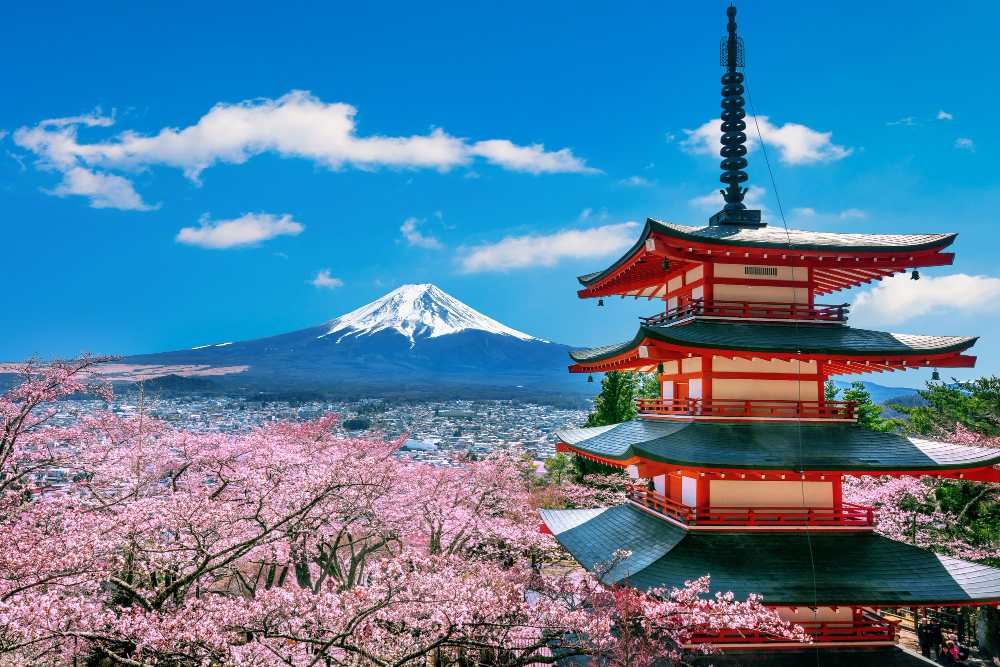
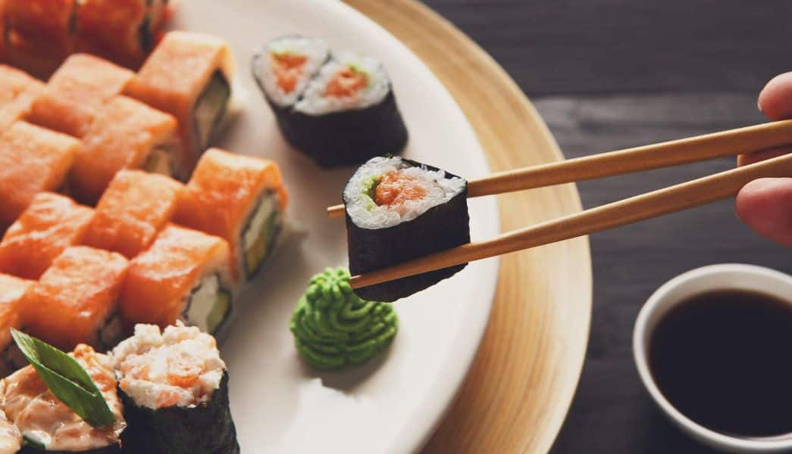
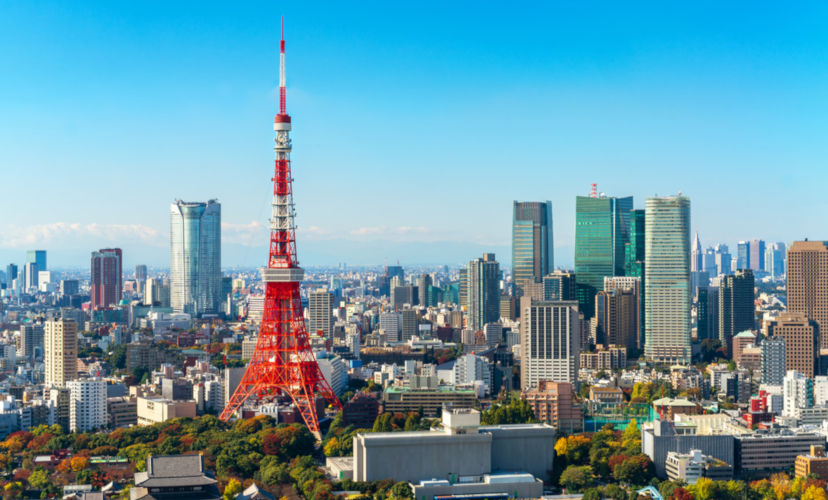

Sobre o destino
O Japão é um país que mistura tradição milenar com tecnologia de ponta, oferecendo uma experiência cultural única através de templos, gastronomia e costumes.
Pontos Turísticos Imperdíveis:
- Kyoto: Templos históricos e cultura tradicional.
- Tóquio: Cidade moderna e vibrante.
- Monte Fuji: Cartão postal do país.
- Templos e Santuários: Tradição e espiritualidade.
- Gastronomia: Sushi, ramen e culinária típica.
Guia Rápido

Melhor época: Março a maio e setembro a novembro - clima agradável e paisagens incríveis.

Como chegar: Os principais aeroportos são Narita (Tóquio) e Kansai (Osaka), com voos internacionais.

Idioma: Japonês - inglês é limitado, mas presente em áreas turísticas.

Moeda: Iene (¥) - muitos lugares só aceitam dinheiro, cartões nem sempre são aceitos.
Custos Médios
- Hotel: ¥8000 - ¥25000 por noite
- Alimentação: ¥1000 - ¥3000 por refeição
- Transporte: ¥200 - ¥1000 por viagem
Localização
Galeria de Fotos


